PROPAGACION DE ONDAS ELECTROMAGNETICAS
Contents
- Práctica FINAL : Aplicación de filtros FIR de fase lineal en Teoría de las comunicaciones
- Integrantes
- Objetivos
- Simular un sistema de modulacion y demodulacion DSB-SC (doble banda lateral con portadora suprimida)
- Señales moduladora y portadora
- A.- Graficar las señales analógicas c(t) y m(t) (Tiempo continuo)
- B. Muestrear las señales analogicas 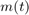 y 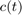 utilizando 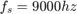 desde 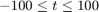 para m(n) y c(n)
- C. Graficar las señales c(n) y m(t) en tiempo discreto.
- D. Calcular (numéricamente) la transformada de Fourier de m(t) y c(t) utilizando las muestras obtenidas m(n) y c(n) y graficar los espectros de magnitud (espectros continuos). Mostrar en el eje horizontal las frecuencias reales de las señales en Hz.
- E. Obtener la señal modulada y(n) = m(n)*c(n) y graficar la señal en tiempo D.
- F. Calcular (numéricamente) la transformada de Fourier de y(t) usando las muestras y(n) y graficar el espectro de magnitud. Mostrar en el eje horizontal las frecuencias reales de las señales en Hz.
- Demodulacion
- G. Obtener la señal r(n) = y(n)c(n) y graficar en tiempo discreto
- H. Graficar el espectro de magnitud de r(n)
- I. Eliminar las bandas laterales de r(n) mediante un filtro FIR simétrico con M=100, obteniendo la señal m2(n)
- J. Graficar la señal m2 y su espectro de magnitud.
- 2. Simular un sistema de modulación y demodulación SSB-SC (Banda lateral única con portadora suprimida).
- b. Utilizando un filtro FIR de fase lineal antisimétrico con M=101, eliminar las bandas laterales superiores para obtener la señal 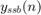$
- c. Graficar la señal yssb(n) y su espectro de magnitud
- Demodulacion de la señal SSB-SC
- I y J. Elimninar las bandas laterales.
- FUNCIONES UTILIZADAS
Práctica FINAL : Aplicación de filtros FIR de fase lineal en Teoría de las comunicaciones
Integrantes
Flores Lima José Ricardo
Objetivos
- En este ejemplo se muestra cómo diseñar, analizar y aplicar un filtro digital a los datos. Le ayudará a responder preguntas como: ¿Cómo compenso el retraso introducido por un filtro?, ¿Cómo evito distorsionar mi señal?, ¿Cómo elimino el contenido no deseado de mi señal?, ¿cómo puedo diferenciar mi señal?, y ¿cómo integro mi señal? Los filtros se pueden utilizar para dar forma al espectro de la señal de la manera deseada o para realizar operaciones matemáticas como la diferenciación y la integración. En lo que sigue aprenderá algunos conceptos prácticos que facilitarán el uso de filtros cuando los necesite. Este ejemplo se centra en las aplicaciones de filtros digitales en lugar de en su diseño. Si desea obtener más información sobre cómo diseñar filtros digitales, consulte el ejemplo "introducción práctica al diseño de filtro digital".
Simular un sistema de modulacion y demodulacion DSB-SC (doble banda lateral con portadora suprimida)
Señales moduladora y portadora
m(t) ---> es la señal moduladora.
c(t) ---> Es la señal portadora.
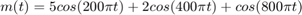
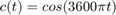
A.- Graficar las señales analógicas c(t) y m(t) (Tiempo continuo)
t = -0.05:(1/9000):0.05; m = 5*cos(200*pi*t) + 2*cos(400*pi*t) + cos(800*pi*t); % Mensaje c = cos(3600*pi*t); % Portadora figure(1) subplot(2,1,1) plot(t,m) grid on title('Señal de Mensaje m(t)') subplot(2,1,2) plot(t,c) axis([-0.005,0.005,-1,1]) grid on title('Señal de portadora c(t)')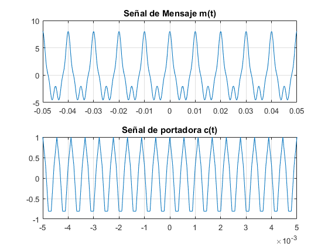
B. Muestrear las señales analogicas y utilizando desde para m(n) y c(n)
n = -100:100; fs = 9000; Ts = 1/fs; m_n = 5*cos(200*pi*n*Ts) + 2*cos(400*pi*n*Ts) + cos(800*pi*n*Ts); % Mensaje c_n = cos(3600*pi*n*Ts); % Portadora
C. Graficar las señales c(n) y m(t) en tiempo discreto.
figure(2)
subplot(211)
stem(n,m_n,'r')
title('Señal m(n) en tiempo discreto ')
subplot(212)
stem(n,c_n,'r')
title('Señal c(n) en tiempo discreto')
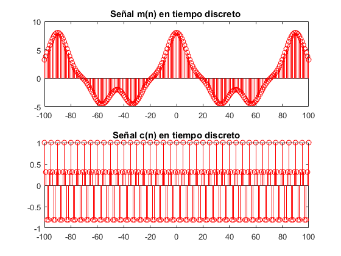 D. Calcular (numéricamente) la transformada de Fourier de m(t) y c(t) utilizando las muestras obtenidas m(n) y c(n) y graficar los espectros de magnitud (espectros continuos). Mostrar en el eje horizontal las frecuencias reales de las señales en Hz.
w = -pi:0.01:pi; M = 0; C = 0; for nn = n M = M + m(nn + 101)*exp(-1i*w*nn); % Transformada de Fourier end figure(3) plot(w*4500/pi, abs(M), 'm') title('Espectro de magnitud del mensaje m(t)') ylabel ('n'); xlabel ('|M(n)|'); % Trasformada de Fourier con la Portadora c(t) for kk = n C= C + c(kk + 101)*exp(-1i*w*kk); % Transformada de Fourier end figure(4) plot(w*4500/pi, abs(C),'g') %% Para ver las frecuencias reales de las señales en Hz title('Espectro de magnitud de la portadora c(t)') ylabel ('n'); xlabel ('|C(n)|');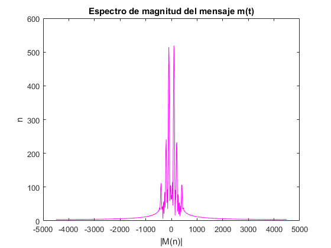 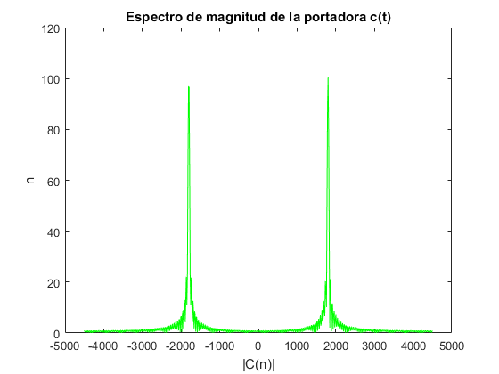
E. Obtener la señal modulada y(n) = m(n)*c(n) y graficar la señal en tiempo D.
y_n = m_n.*c_n; % Señal modulada Tiempo Discreto y_t = m.*c; % Señal modulada Tiempo Continuo figure(5) subplot(2,1,1) stem(n,y_n,'r') title('Señal modulada y(n)') ylabel ('n'); xlabel ('y(n)=m(n)*c(n)'); subplot(2,1,2) plot(t,y_t,'r') title('Señal modulada y(t)') ylabel ('t'); xlabel ('y(t)=m(t)*c(t)');

F. Calcular (numéricamente) la transformada de Fourier de y(t) usando las muestras y(n) y graficar el espectro de magnitud. Mostrar en el eje horizontal las frecuencias reales de las señales en Hz.
Y=0; for oo = n Y = Y + y_t(oo + 101)*exp(-1i*w*oo); % Transformada de Fourier end figure(6) plot(w*4500/pi, abs(Y),'g') %% Para ver las frecuencias reales de las señales en Hz title('Espectro de magnitud de la señal modulada y(w)') ylabel ('n'); xlabel ('|Y(w)|');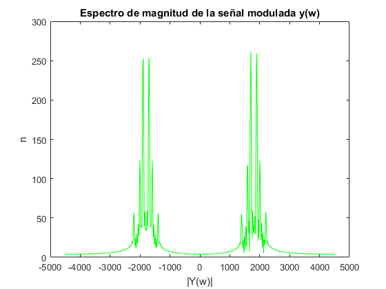
Demodulacion
G. Obtener la señal r(n) = y(n)c(n) y graficar en tiempo discreto
r_n = y_n.*c_n;
figure(7)
stem(n, r_n)
title('Señal a la salida del receptor r(n)')
ylabel ('n');
xlabel ('r(n) = y(n)*c(n)');
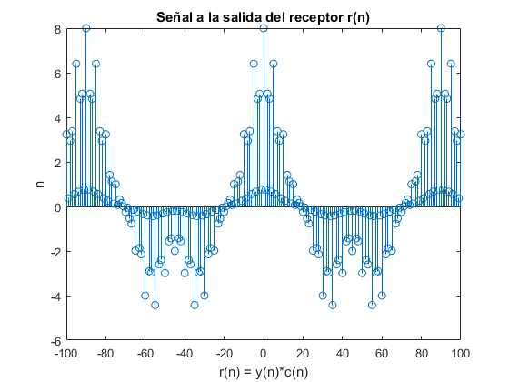 H. Graficar el espectro de magnitud de r(n)
R_N=0; for rr = n R_N = R_N + r_n(rr + 101)*exp(-1i*w*rr); end figure(8) plot(w*4500/pi, abs(R_N),'r') title('Espectro de magnitud de la señal r(n)') ylabel ('n'); xlabel ('R(W)');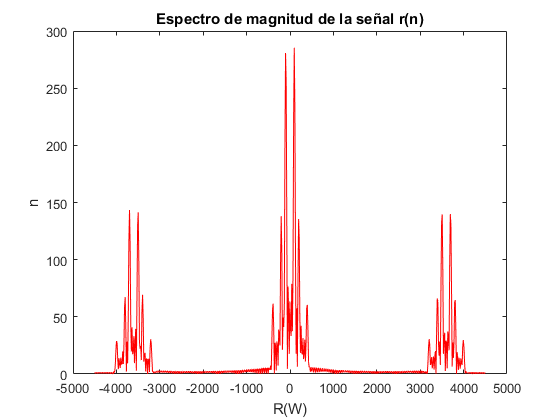
I. Eliminar las bandas laterales de r(n) mediante un filtro FIR simétrico con M=100, obteniendo la señal m2(n)
M = 100;
aux = zeros(1,38);
Hr = [1 1 1 1 1 1 1 1 1 1 0.8 0.5 aux];
A = ank(M);
h = inv(A)*Hr';
Hw = 0;
w1=-pi:0.01:pi;
for n = 0:((M/2)-1)
Hw = Hw + 2*cos(((M-1)/2-n).*w1)*h(n+1);
end
figure(9)
plot(w1*2000/pi, 20*log10(abs(Hw)),'r');
title('Respuesta en frecuencia del filtro')
h = [h; flipud(h)];
figure(10)
stem(h,'m')
title('Respuesta al impulso del filtro')
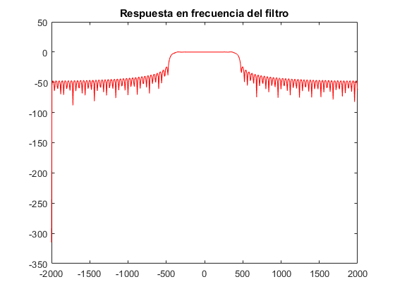 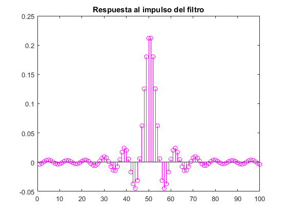 J. Graficar la señal m2 y su espectro de magnitud.
m2n = R_N.*Hw;
m2 = conv(r_n,h);
figure(11)
subplot(2,1,1)
plot(m_n,'r')
title('Señal Transmitida')
subplot(2,1,2)
plot(m2,'g')
title('Señal Recuperada = m(n)')
figure(12)
subplot(3,1,1)
plot(w*4500/pi, abs(R_N),'m')
title('Espectro de magnitud de la señal modulada r(n)')
subplot(3,1,2)
plot(w1*2000/pi, 20*log10(abs(Hw)),'m');
title('Respuesta en frecuencia del filtro pasabajas')
axis([-2000 2000 -80 20]);
subplot(3,1,3)
plot(w*4500/pi, abs(m2n),'m');
title('Espectro de la señal a la salida del filtro FIR (Señal recuperada)')
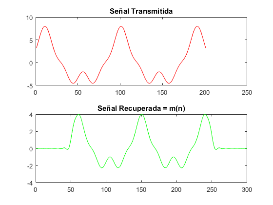 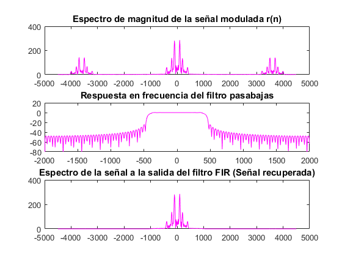 2. Simular un sistema de modulación y demodulación SSB-SC (Banda lateral única con portadora suprimida).
a. Repetir los pasos (a)- (f) del problema (1).
b. Utilizando un filtro FIR de fase lineal antisimétrico con M=101, eliminar las bandas laterales superiores para obtener la señal $
M1 = 101; B = bnk(M1); w2 = -pi:0.01:pi; Im_par=[zeros(1,7) .1 .5 .9 ones(1,8) .9 .5 .1 zeros(1,29)]; h_impar = inv(B)*Im_par'; h2 = [h_impar;0;-flipud(h_impar)]; H_rim = 0; for j=0:(M1-1)/2 H_rim = H_rim + 2*sin(((M1-1)/2-j).*w2)*h2(j+1); end figure(13) hold on plot(w2*2000/pi, 20*log10(abs(H_rim)),'r') title('H(w) Antisimetrico Impar') axis([-2000 2000 -90 10]);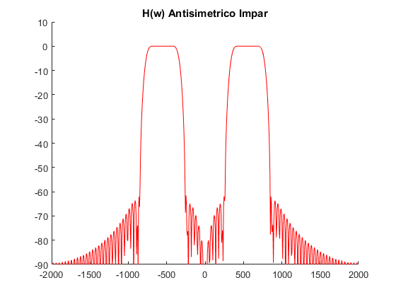
c. Graficar la señal yssb(n) y su espectro de magnitud
yss_bn = conv(y_n,h2);
yss_bn = yss_bn(50:250);
z = -100:100;
figure(14)
stem(z, yss_bn)
title('Señal yssb(n)')
yss_bw = H_rim.*Y;
figure(15)
subplot(2,1,1)
plot(w*4500/pi, abs(yss_bw))
title('Espectro de la señal SSB-SC yssb(n)')
subplot(2,1,2)
plot(w*4500/pi, abs(Y))
title('Espectro de magnitud de la señal modulada y(t)')
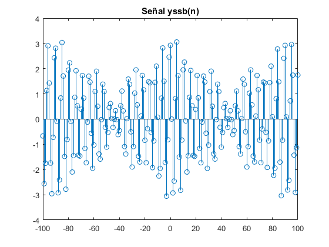 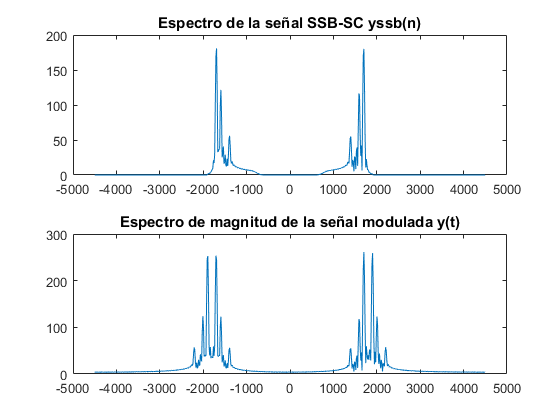 Demodulacion de la señal SSB-SC
% g. Obtener la señal r(n) = yssb(n)c(n) y graficar en tiempo discreto r2_n = yss_bn.*c_n; figure(16) stem(z,r2_n) title('Señal r(n) = y(n)c(n)') % H. Espectro de R2n figure(17) f=linspace(-fs/2,fs/2,1000); R_2=fftshift(fft(r2_n,1000)); plot(f,abs(R_2),'g'); title('Rssb(w)')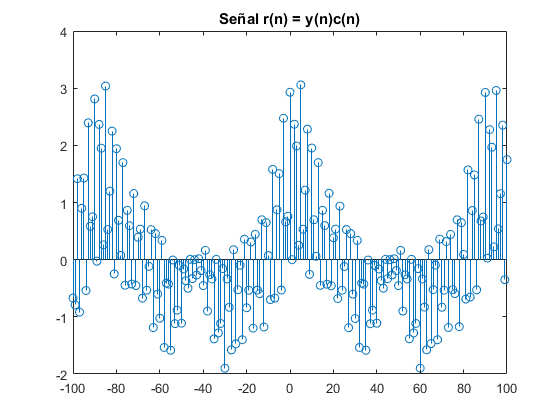 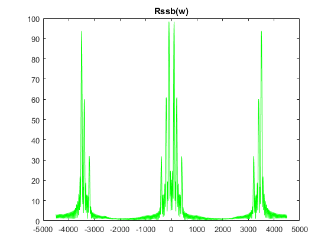
I y J. Elimninar las bandas laterales.
mensb = conv(r2_n,h);
m_rec = mensb(50:250);
figure(18)
subplot(2,1,1)
plot(m_n,'m')
title('Señal Transmitida')
subplot(2,1,2)
plot(m_rec,'m')
title('Señal Demodulada')
M2 = fftshift(fft(m_rec,1000));
f2 = linspace(-fs/2,fs/2,length(M2));
figure(19)
plot(f2, abs(M2),'r')
title('Espectro de la señal recibida de (yssb(n))')
 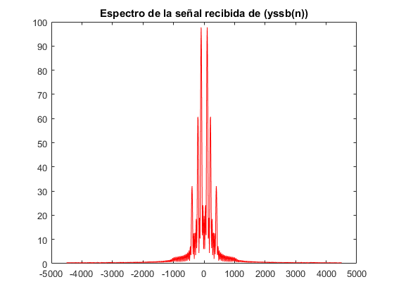
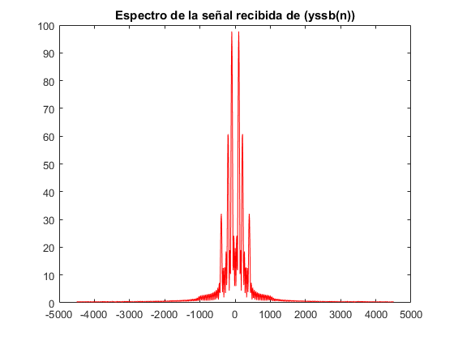 FUNCIONES UTILIZADAS
% function [A]= ank(M) %par , M numero de muestras % if((-1).^M)==1 % for k=0:(M/2-1) % w(k+1)=((2*pi)/M)*(k); %matlab no inicia en 0 (2*pi*k)/M ,, renglon --> % for n=0:1:(M/2-1) % A(k+1,n+1)=2*cos(((M-1)./2-(n))*w(k+1)); %columna % end %end %end %Impar % if((-1).^M)==-1 % for kk=0:((M-1)/2) % w(kk+1)=((2*pi)/M)*(kk); % for nn=0:1:((M-1)/2) % if(nn==(M-1)/2) % si llega al ultimo valor, osea el limite % A(kk+1,nn+1)=1; % habra un 1 en la ultima columna, para saber %Impar % else % A(kk+1,nn+1)=2.*cos(((M-1)./2-(nn)).*w(kk+1)); % end % end % end %end %A %end %--------------------------------------------------------------------------% % function [B]= bnk(M) %par % if((-1).^M)==1 % for n=0:1:((M/2)-1) % w(n+1)=((2*pi)./M)*(n+1/2); % for k=0:1:((M/2)-1) % B(n+1,k+1)=2*sin(((M-1)./2-k)*w(n+1)); % end % end % end %impar % if((-1).^M)==-1 % for nn=0:1:(((M-1)./2)-1)% 5-1/2 -1 sera una matriz de 0 a 1 2x2 % w(nn+1)=(((2*pi)./M)*(nn+1/2)); % for kk=0:1:(((M-1)./2)-1) % B(nn+1,kk+1)=2*sin((((M-1)./2)-kk)*w(nn+1)); % end % end % end % end